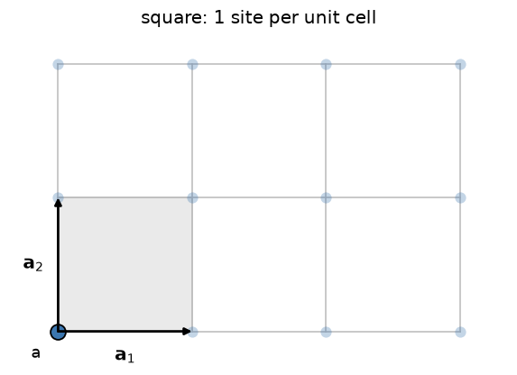
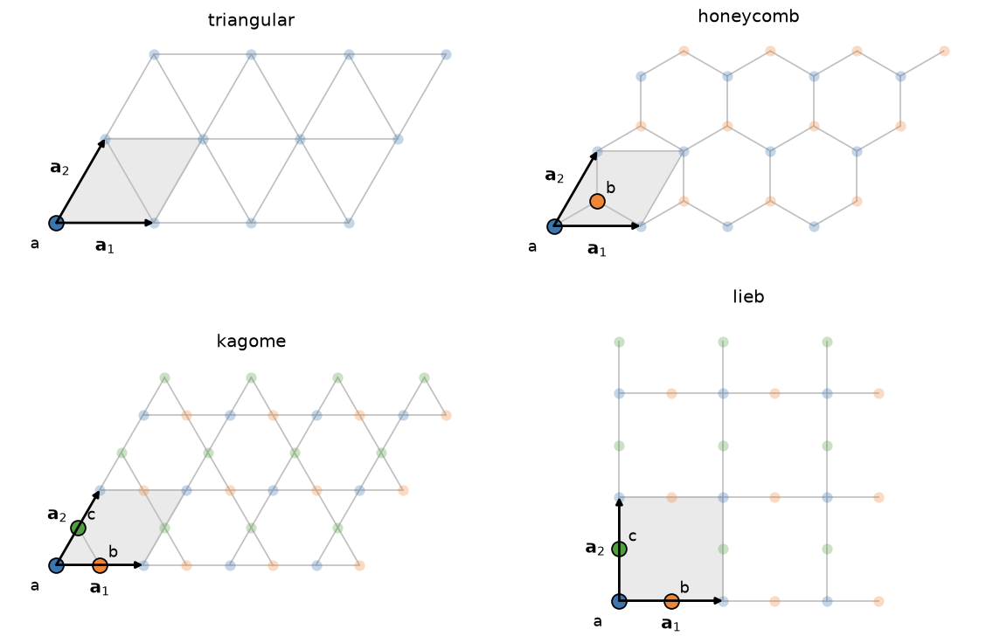
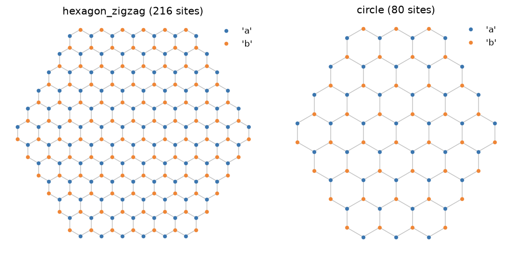
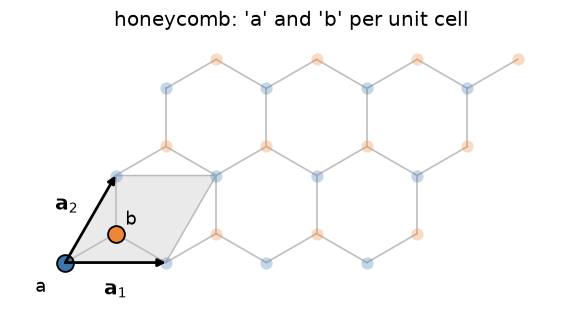

Tutorial#
This walks through tbkit’s pieces in the order you would normally use
them: define a lattice, build a real-space Tight-Binding model and
diagonalize it, build the same model’s Bloch Hamiltonian in reciprocal
space, then layer on more physics (disorder, strain, a magnetic field,
spin-orbit coupling, topology, edge states), and on to three dimensions,
several orbitals per site, large lattices, transport, interactions,
superconductivity, and non-Hermitian and driven systems. Runnable versions of most of
this live in the examples/ directory, referenced throughout.
A Tight-Binding Hamiltonian describes electrons hopping between localized orbitals:
where \(\epsilon_i\) are onsite energies and \(t_{ij}\) are hopping amplitudes between orbitals i and j. Everything in tbkit is about building this matrix (or, in reciprocal space, its Bloch analog \(H(\mathbf{k})\)) and then doing something with it: diagonalizing it, plotting it, evolving a wavepacket under it.
Building a lattice#
tbkit.lattice.Lattice defines the geometry: a unit cell (a list of
orbitals, each with a sublattice tag and a position) and one or two
primitive vectors:
from tbkit.lattice import Lattice
unit_cell = [{'tag': 'a', 'r0': (0., 0.)}]
prim_vec = [(1., 0.), (0., 1.)]
lat = Lattice(unit_cell=unit_cell, prim_vec=prim_vec)
lat.get_lattice(n1=6, n2=6) # 6x6 unit cells -> 36 sites
The unit cell is the motif; the primitive vectors say how to repeat it. Here one site per cell repeated on a square grid:

Throughout this page, the shaded parallelogram is the unit cell, the arrows are \(\mathbf{a}_1\) and \(\mathbf{a}_2\), and the sites drawn solid and labelled are the cell’s own orbitals – every faded site is a copy of one of them, translated by some \(\mathbf{R}=n_1\mathbf{a}_1+n_2\mathbf{a}_2\).
lat.coor now holds every site’s position and tag. Sculpt the shape
with methods like remove_sites, ellipse_in/ellipse_out,
boundary_line, or by adding/subtracting two lattices (lat1 + lat2).
tbkit.lattices has a handful of common lattices (chain, square,
triangular, honeycomb, kagome, Lieb) ready to use instead of writing out
unit_cell/prim_vec by hand. Their unit cells are what distinguishes
them – one site for the square and triangular lattices, two for the
honeycomb, three for the kagome and Lieb:

See lat.plot() to look at what you built, and
examples/examples_lattice.ipynb for many more shapes.
Sculpting works on the finite patch. Cutting a disc out of a honeycomb sheet, for instance:

Real space: build and solve a finite system#
tbkit.system.System takes a Lattice and builds the Hamiltonian
from a list of hoppings:
from tbkit.system import System
sys = System(lat)
sys.set_onsite({'a': 0.})
sys.set_hopping([{'n': 1, 't': 1.}]) # nearest-neighbor hopping t=1
sys.get_ham()
sys.get_eig()
print(sys.en) # eigenenergies, sorted
Hoppings are addressed by neighbor order ('n': 1 is nearest-neighbor,
'n': 2 next-nearest, …; sys.print_distances() lists them), and
optionally further filtered by bond angle or by sublattice-pair tag –
see tbkit.system.System.set_hopping()’s docstring for the full
mini-language. For anything that doesn’t fit that pattern, i,j-indexed
hoppings work directly on the actual real-space site indices printed by
lat.plot(plt_index=True). Hamiltonians can be Hermitian or, if you fill
in both the upper and the lower parts independently (upper_part=True
and upper_part=False), non-Hermitian.
tbkit.plot.Plot plots the lattice, the spectrum, sublattice
polarization, eigenstate intensities, and the density of states
(dos()):
from tbkit.plot import Plot
p = Plot(sys)
p.spectrum()
p.dos(broadening=0.1)

Reciprocal space: Bloch Hamiltonians and band structures#
A finite flake is one way to look at a lattice; the other is to keep it
infinite and periodic, and work with its Bloch Hamiltonian
\(H(\mathbf{k})\). tbkit.kspace.KSpace builds it from a small
set of intra-unit-cell hoppings, each tagged by which neighboring cell
(\(\mathbf{R} = n_1\mathbf{a}_1+n_2\mathbf{a}_2\)) it connects to:
from tbkit.kspace import KSpace, reciprocal_vectors
import tbkit.lattices as lattices
import numpy as np
lat = lattices.honeycomb()
gra = KSpace(lat)
gra.set_hopping([{'i': 0, 'j': 1, 'R': (0, 0), 't': 1.},
{'i': 0, 'j': 1, 'R': (-1, 0), 't': 1.},
{'i': 0, 'j': 1, 'R': (0, -1), 't': 1.}])
Those three dictionaries are exactly the three bonds leaving the cell’s
'a' site: one to the 'b' in the same cell
(\(\mathbf{R}=(0,0)\)), and one each to the 'b' of the cells at
\(\mathbf{R}=(-1,0)\) and \(\mathbf{R}=(0,-1)\).

Only one representative of each bond is needed – the reverse bond
(\(j\to i\), \(\mathbf{R}\to-\mathbf{R}\)) is added automatically
as its Hermitian conjugate. Diagonalize at a single k-point with
get_ham/LA.eigh, over an explicit set of k-points with
get_bands, or along a path through high-symmetry points with
k_path (reciprocal_vectors() gives the reciprocal
lattice vectors to build that path from):
b1, b2 = (np.array(v) for v in reciprocal_vectors(lat.prim_vec))
Gamma, K, M = np.zeros(2), (b1 - b2)/3, b1/2
gra.k_path([Gamma, K, M, Gamma], nk=60)
fig = gra.plot_bands(node_labels=[r'$\Gamma$', 'K', 'M', r'$\Gamma$'])
gra.mesh_bands(nk) samples a uniform mesh over the whole Brillouin
zone instead (used internally by plot_dos, and for the topology tools
below). See examples/tight_binding/plot_graphene_bands.py.

Graphene: Real-Space Flake and Reciprocal-Space Bands
Disorder, strain, and a magnetic field#
On a System, set_onsite_dis/set_hopping_dis add uniform random
disorder; GrapheneSystem.set_hop_linear_strain (in tbkit.graphene)
applies triaxial strain. An orbital magnetic field is added via the
Peierls substitution – each hopping amplitude gets multiplied by a phase
equal to the line integral of the vector potential along the bond:
sys.set_hopping_manual(hop_dict)
sys.set_magnetic_field(alpha=0.01) # alpha = B/Phi_0, flux quanta per unit area
sys.get_ham()
set_peierls_phase takes an arbitrary phase function for a
non-uniform field or a different gauge. See
examples/magnetic_field/plot_magnetic_field.py for an Aharonov-Bohm ring, where the
spectrum is checked to be exactly periodic in the enclosed flux.

Spin and spin-orbit coupling#
KSpace(lat, spin=True) gives every site a spin-1/2 degree of freedom
(orbitals double: 2*i, 2*i+1 are the up/down components of site i).
set_onsite/set_hopping then also accept 2x2 matrices – built from
tbkit.kspace.PAULI’s Pauli matrices – for spin-dependent terms:
from tbkit.kspace import PAULI
kmele = KSpace(lat, spin=True)
kmele.set_hopping([{'i': 0, 'j': 1, 'R': (0, 0), 't': 1.},
{'i': 0, 'j': 1, 'R': (-1, 0), 't': 1.},
{'i': 0, 'j': 1, 'R': (0, -1), 't': 1.}])
# intrinsic SOC, along the three second-neighbor vectors a2, -a1, a1-a2
# (120 degrees apart, as the lattice's C3 symmetry requires)
for R in [(0, 1), (-1, 0), (1, -1)]:
kmele.set_hopping([{'i': 0, 'j': 0, 'R': R, 't': 1j*lam*PAULI['z']}])
kmele.set_hopping([{'i': 1, 'j': 1, 'R': R, 't': -1j*lam*PAULI['z']}])
A plain number is still accepted for a spin-independent hopping (expanded
to t*PAULI['0']), and onsite values accept a pair (E_up, E_down)
for a Zeeman-like splitting.
Topology: Berry curvature and Chern numbers#
For a periodic (KSpace) model, chern_number()
gives the Chern number of a group of bands (an isolated band, or several
occupied bands below a gap), computed by the gauge-invariant
Fukui-Hatsugai-Suzuki lattice method – an integer, for a group of bands
with a gap above and below it everywhere in the Brillouin zone:
chern = gra.chern_number(bands=[0], nk=40) # ~0 for plain graphene (gapless!)
berry_curvature() gives the underlying
\(\mathbf{k}\)-resolved curvature (chern_number is just its sum,
divided by \(2\pi\)). See examples/topology/plot_haldane_topology.py for the
Haldane model – the original Chern insulator – reproducing its
topological phase transition (Chern number 1 in one phase, 0 in the
other) as a sublattice mass term is tuned.

The Haldane Model: Berry Curvature and a Topological Phase Transition
Edge states: cutting a ribbon#
Bulk topology has a physical consequence at an edge. tbkit.kspace.ribbon()
cuts a ribbon – periodic along one primitive vector, finite (open
boundary, a chosen number of unit cells) along the other – out of any
periodic model, keeping its hoppings intact:
from tbkit.kspace import ribbon
list_hop = [{'i': 0, 'j': 1, 'R': (0, 0), 't': 1.},
{'i': 0, 'j': 1, 'R': (-1, 0), 't': 1.},
{'i': 0, 'j': 1, 'R': (0, -1), 't': 1.}]
rib = ribbon(lat, list_hop, width=30, direction=1)
rib.k_path([(-np.pi,), (np.pi,)], nk=200)
fig = rib.plot_bands()
For a zigzag graphene ribbon this reproduces the famous zero-energy edge
flat band; cutting a ribbon from the Kane-Mele model above instead shows
helical edge states crossing the bulk gap, protected by Kramers’ theorem.
See examples/topology/plot_edge_states.py, where both are checked numerically.

More topology: Berry phases, Wannier centres, and Z2#
In one dimension (or along one direction of a 2D/3D model),
berry_phase() gives the Zak phase of a group
of bands – a Wilson loop across the Brillouin zone – and
wannier_centers() the positions, in units of
the lattice constant, of the corresponding hybrid Wannier functions. For
the SSH chain the Wannier centre sits at the middle of the strong bond,
inside the cell (0.25 here) or between two cells (0.75):
from tbkit.lattice import Lattice
lat_ssh = Lattice(unit_cell=[{'tag': 'a', 'r0': (0., 0.)}, {'tag': 'b', 'r0': (0.5, 0.)}],
prim_vec=[(1., 0.)])
ssh = KSpace(lat_ssh)
ssh.set_hopping([{'i': 0, 'j': 1, 'R': (0,), 't': 0.5},
{'i': 1, 'j': 0, 'R': (1,), 't': 1.}])
zak = ssh.berry_phase(0, nk=200) # -pi/2: Wannier centre at 0.75
centre = ssh.wannier_centers(0, nk=200)
By default the orbital positions inside the cell enter the Bloch phases
(positions=True), so the result is a physical polarization; pass
positions=False for the periodic-gauge value, which inversion
symmetry quantizes to 0 or \(\pi\) (here \(\pi\)). With time-reversal
symmetry, wannier_flow() follows the Wannier
centres across half the Brillouin zone and
z2_invariant() counts how often they wind –
the Kane-Mele \(\mathbb{Z}_2\) invariant – while, for an
inversion-symmetric model, parity_z2() gets
the same number from the Fu-Kane parities at the time-reversal-invariant
momenta:
nu = kmele.z2_invariant([0, 1], nk=60, nk_perp=41)
symmetry_error() checks whether a unitary or
antiunitary operator is a symmetry of the Bloch Hamiltonian, and
tenfold_class() names the Altland-Zirnbauer
class; quantum_geometric_tensor() gives the
quantum metric (its real part) and Berry curvature (its imaginary part)
at one k-point. magnetic_supercell() builds the
magnetic Bloch Hamiltonian of a rational flux \(p/q\) per unit cell,
whose Chern numbers are the TKNN Hall conductances. Topology survives
without translation invariance: on a finite, even disordered, flake
get_local_chern_marker() is the Chern number
site by site. See examples/topology/.

The Zak Phase: Where the SSH Chain’s Electrons Sit
Hall conductivities at any Fermi level#
The Chern number is the Hall conductance of a filled group of bands. At
any Fermi level – in a gap, inside a band, at finite temperature –
hall_conductivity() sums the Berry curvature
of the occupied states with the Kubo formula, in units of \(e^2/h\)
in 2D (for a 3D model, on a plane, or as the full Hall vector in
\(e^2/(h\cdot\mathrm{length})\)). One mesh diagonalization serves a
whole array of Fermi energies; for the Haldane model hal of
examples/topology/plot_haldane_topology.py:
import numpy as np
e_f = np.linspace(-3., 3., 301)
sigma = hal.hall_conductivity(e_f, nk=120) # = chern_number in the gap
sigma_t = hal.hall_conductivity(e_f, temperature=0.05, nk=60, refine=4)
In a gap it equals chern_number() (the sign of
TKNN; the docstring relates it to the Ohm’s-law tensor). refine
resamples the hot spots of the curvature on a finer submesh.
spin_hall_conductivity() does the same for the
spin current \(\{s_z, v_x\}/2\) of a spinful model, in units of
\(e/2\pi\) – 1 in the gap of the Kane-Mele model:
sigma_s = kmele.spin_hall_conductivity(0., nk=60)
For large, disordered samples, tbkit.kpm.hall_conductivity()
computes the Kubo-Bastin Hall conductivity in real space, on a torus
built by finite_ham() with the velocities of
finite_velocity():
import tbkit.kpm as kpm
ham = hal.finite_ham(100, periodic=True, sparse=True)
vx, vy = hal.finite_velocity(100, periodic=True, sparse=True)
area = 100**2 * abs(np.linalg.det(np.array(hal.lat.prim_vec)))
energies, sigma = kpm.hall_conductivity(ham, vx, vy, n_moments=256, area=area)
See examples/hall_effects/.

The Anomalous Hall Effect: from the Anomalous Velocity to the Berry Phase
Three dimensions#
Give the unit cell 3D positions and three primitive vectors and every
tool above works in 3D: get_lattice(n1, n2, n3) and
Lattice.slab in real space, three-component 'R' in KSpace,
and chern_number(..., plane=(0, 1), k_fixed=kz) on a plane of the
Brillouin zone – the way to find Weyl points, where it jumps:
cubic = [(1., 0., 0.), (0., 1., 0.), (0., 0., 1.)]
lat = Lattice(unit_cell=[{'tag': 'a', 'r0': (0., 0., 0.)}], prim_vec=cubic)
lat.get_lattice(n1=10, n2=10, n3=10)
ribbon() then cuts a slab (finite along one
direction, periodic along the other two). See
examples/three_dimensions/.

Weyl Semimetals: Monopoles of Berry Curvature and Fermi Arcs
Several orbitals per site, and Slater-Koster integrals#
tbkit.slater_koster.sk_kspace() builds a KSpace with several
orbitals per site (s, p, d) from Slater-Koster bond integrals, keyed by
neighbour order; an optional overlap gives a non-orthogonal basis,
and the bands then solve the generalized eigenproblem
\(H\psi = ES\psi\):
from tbkit.slater_koster import sk_kspace
orbitals = {'a': ['s', 'px', 'py', 'pz'], 'b': ['s', 'px', 'py', 'pz']}
graphene = sk_kspace(lattices.honeycomb(), orbitals,
{1: {'ss_sigma': -6.77, 'sp_sigma': 5.58,
'pp_sigma': 5.04, 'pp_pi': -3.03}},
onsite={'a': {'s': -8.87}, 'b': {'s': -8.87}})
tbkit.orbital.OrbitalSystem is the real-space counterpart, with
spin: Zeeman, atomic and Kane-Mele spin-orbit coupling, Rashba coupling
and Peierls phases on multi-orbital flakes. See examples/orbitals/.

The Slater-Koster Method: Graphene’s sigma and pi Bands
Large lattices: sparse solvers and the kernel polynomial method#
Above System.dense_max sites, System finds neighbours with a
k-d tree instead of a dense distance matrix, and
get_eig_sparse() finds a few eigenstates near
an energy by shift-invert. For spectral quantities of hundreds of
thousands of sites, tbkit.kpm expands them in Chebyshev
polynomials – density of states, local density of states and the
Kubo-Greenwood conductivity – at the cost of a few hundred sparse
matrix-vector products:
import tbkit.kpm as kpm
energies, rho = kpm.dos(sys.ham, n_moments=256, n_random=24)
See examples/large_scale/.

The Kernel Polynomial Method: Graphene With Vacancies, 45,000 Sites
Green’s functions, occupations, and transport#
get_green() and
get_ldos() give the retarded Green’s function
and local density of states; get_fermi_level(),
get_occupations and get_charge_density fill the levels with a
given number of electrons, at zero or finite temperature
(tbkit.occupation). tbkit.transport.Transport attaches
semi-infinite leads to a finite device (their surface Green’s functions
by Sancho-Rubio decimation, lead_from_kspace()
making a lead from any KSpace model) and returns the Landauer
transmission:
from tbkit.transport import Transport, lead_from_kspace
# strip: a KSpace ribbon, the cross-section of the leads
h_left, v_left = lead_from_kspace(strip, -1) # continued to -x
h_right, v_right = lead_from_kspace(strip, 1) # continued to +x
tr = Transport(sys.ham)
tr.add_lead(h_left, v_left, coupling, left_sites)
tr.add_lead(h_right, v_right, coupling, right_sites)
conductance = tr.transmission(energies) # in units of e^2/h
See examples/transport/.

The Landauer Formula: Quantized Conductance of a Point Contact
Interactions and superconductivity#
tbkit.meanfield.hubbard_mean_field() solves the Hubbard model in
the unrestricted Hartree-Fock approximation, self-consistently, from
any single-particle Hamiltonian:
from tbkit.meanfield import hubbard_mean_field
result = hubbard_mean_field(sys.ham, U=2., n_electrons=sys.lat.sites)
result.magnetization, result.total_spin, result.energy
tbkit.bdg builds Bogoliubov-de Gennes Hamiltonians, in real space
(bdg_ham with the pairings pairing_bonds/pairing_s_wave) and
in reciprocal space (bdg_kspace, a KSpace whose extra orbitals are
the holes, so all the topology tools above apply to it). See
examples/correlations/ and examples/superconductivity/.

Non-Hermitian bands and Floquet driving#
KSpace.set_hopping(..., hermitian=False) stores a hopping without
its conjugate, for non-reciprocal models (the Hatano-Nelson chain);
spectral_winding() gives the point-gap
winding number that predicts the skin effect,
finite_ham() an open or closed finite chain,
and gbz() the generalized Brillouin zone.
In two dimensions, bands touch at diabolical points (Hermitian
degeneracies, such as graphene’s Dirac points) or at exceptional
points, where the eigenvectors coalesce as well. tbkit.exceptional
tells them apart. Its functions take a 2D KSpace, or any callable
returning a matrix for a point of a parameter plane, and a closed loop
(circle(), or polygon vertices):
import tbkit.exceptional as ex
# graphene with a non-Hermitian coupling i*gamma between the sublattices
gra.set_hopping([{'i': 0, 'j': 1, 'R': (0, 0), 't': 0.3j},
{'i': 1, 'j': 0, 'R': (0, 0), 't': 0.3j}], hermitian=False)
eps = ex.find_exceptional_points(gra, nk=40) # positions, charges, orders
eps.total_charge # 0: EPs come in pairs
loop = ex.circle(eps.k[0], 0.05)
ex.vorticity(gra, loop) # +-1/2 (0 around a Dirac point)
ex.discriminant_winding(gra, loop) # -+1, no band tracking needed
ex.encircle(gra, loop, n_loops=2).phase # pi: back after 2 loops, sign flipped
arcs = ex.fermi_arcs(gra, nk=60) # Re E_+ = Re E_- between the EPs
biorthogonal_chern_number() gives the Chern
number of a non-Hermitian band from its left and right eigenvectors (the
LR, RL, RR and LL definitions agree) when a real or imaginary line gap
isolates it. chern_number() raises a
ValueError for a non-Hermitian band without a real line gap. See
examples/non_hermitian/plot_exceptional_point*.py and
examples/topology/plot_diabolical_points.py.
tbkit.floquet handles time-periodic Hamiltonians: the evolution
operator over a period, quasienergies, the Floquet Hamiltonian and the
Sambe (extended-space) Hamiltonian. tbkit.floquet.FloquetKSpace
drives a KSpace with a vector potential \(\mathbf{A}(t)\) and
behaves as the static KSpace of its Floquet Hamiltonian – bands,
Chern numbers and all:
from tbkit.floquet import FloquetKSpace
omega, a0 = 12., 0.6
light = lambda t: (a0 * np.cos(omega * t), a0 * np.sin(omega * t))
driven = FloquetKSpace(gra, light, 2 * np.pi / omega, n_steps=60)
chern = driven.chern_number(0, nk=16)
The Chern numbers of \(H_F\) do not always count a driven system’s
edge states: in anomalous Floquet phases every band has \(C = 0\)
while chiral edge states cross every gap. tbkit.floquet.step_drive()
builds a piecewise-constant drive from a list of models (KSpace
models, ribbons, or System flakes), evolved exactly;
winding_number() gives the winding
number of Rudner et al. in the gap at epsilon, and
edge_state_count() counts the edge
states of a driven ribbon:
from tbkit.floquet import step_drive
# models[s]: the KSpace of step s (hopping along one bond direction)
drive = step_drive(models, [T / 5] * 5)
w = drive.winding_number(epsilon=np.pi / T) # 1 at perfect transfer
See examples/non_hermitian/plot_skin_effect.py and examples/floquet/.

Floquet Engineering: A Chern Insulator From Circularly Polarized Light
Where next#
tbkit package – the full API reference, generated from the source docstrings.
examples/in the repository – runnable scripts and notebooks for everything above, plus more (kagome, Lieb, propagation, …).tests/– every claim above (flat bands, Chern numbers, Kramers degeneracy, flux periodicity, …) is checked against an analytic or independently-computed result somewhere in the test suite; reading them alongside the code they test is a good way to see the underlying physics made concrete.